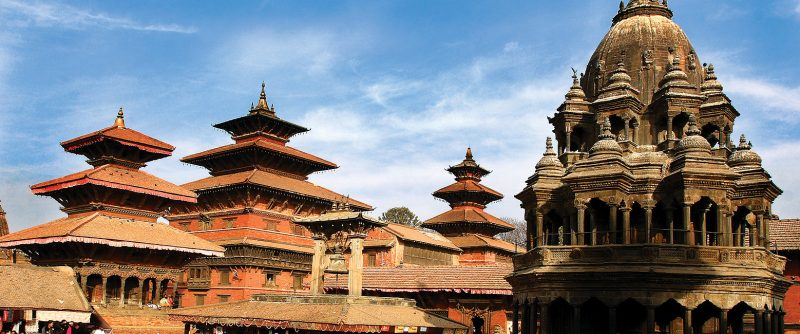

RANI-MAHAL

The Rani Mahal in palpa is often reffered to as the "Taj Mahal of Nepal" This place is located in Nepal's palpa District, beside the bank of the kali Gandaki river. this is becoming a popular tourist attraction for people who want to see how far love could stretch. because every aspect of the building was meticulously detailed, the palace took five years to finish. the place was constructed on the edge of the forest, the forest was given the names Rani Ban. the beautifu, magnificient, historic and heavenly palace Rani mahal is located just 18 km north fromn the Tansen, Palpa.
LUMBINI

Lumbini is a pilgrimage site in Nepal that is associated with the birth of Gautama Buddha, the founder of Buddhism. It is believed to have been the birthplace of Buddha in the 6th century BCE, and it is now a UNESCO World Heritage site that attracts millions of visitors every year. The main attraction at Lumbini is the sacred Maya Devi Temple, which houses a bas-relief depicting the birth of Buddha and a sacred pond where it is believed Maya Devi took a bath before giving birth to Buddha.
LALITPUR-PATAN
Patan Durbar Square is a historic palace complex in Patan, Nepal. It was once the royal palace of the Malla Kings of the city-state of Patan. The complex is now a UNESCO World Heritage site and a popular tourist attraction. It features intricate Newari architecture, including temples, shrines, courtyards, and architectural masterpieces such as the three-story stone temple of Krishna Mandir. The palace complex also features a museum that showcases artifacts from Patan's rich history.